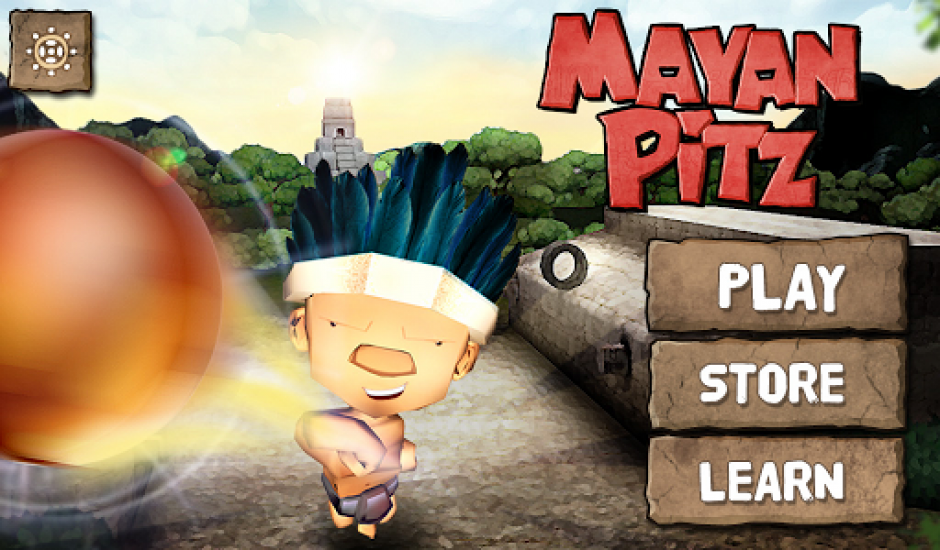

Mayan Pitz Fue creado por Digital Partners. Es el primer juego 3D móvi desarrollado en Guatemala por Digital Partners. Se trata de un juego de pelota maya, basado en fragmentos del Popol Vuh. Puedes descargarlo en APP Store y Google Play. 
Mayan Pitz
Fue creado por Digital Partners.